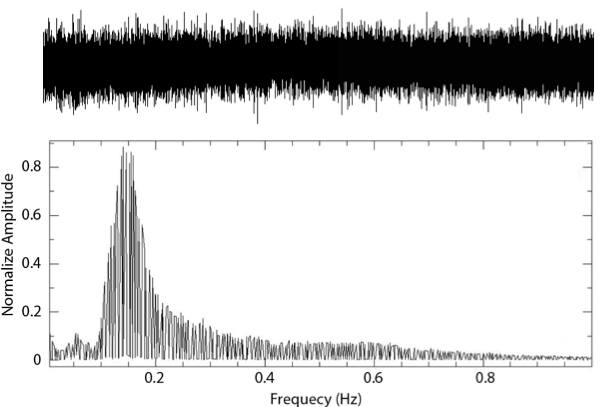

A software for ambient noise tomography with adaptive grid
This project is maintained by PengLiPK
This software builds the surface wave velocity model of the earth from ambient seismic noise. Ambient seismic noise is a kind of continuous background noise in seismograms, whose sources are most likely from the ocean. It is found that the cross-correlation of the ambient seismic noise record of two seismic stations could estimate the empirical Green’s function between the two stations. So the ambient noise can be used to build the surface wave velocity model. This software uses an automatically constructed adaptive grid which fits the spatial data distribution to represent the model structure. The method significantly improves the stability of the inverse process and the resolution of the surface wave velocity model.
It contains the following features:
1. Time series seismic data processing and cross-correlation.
2. Automatically constructed Delaunay triangles based adaptive grid.
3. Fitted the group velocity of surface wave by using Frequency-time analysis.
4. Outputs are group velocity models at multiple periods of surface wave.
